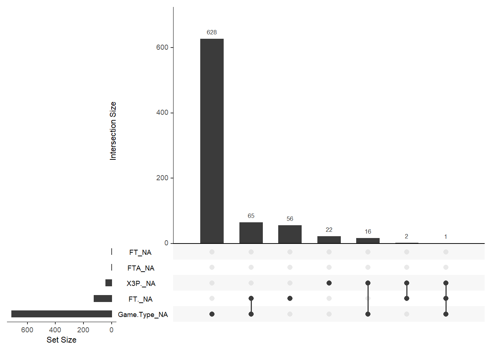
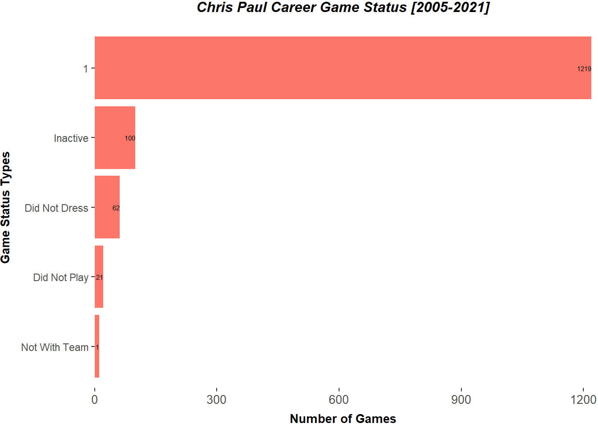
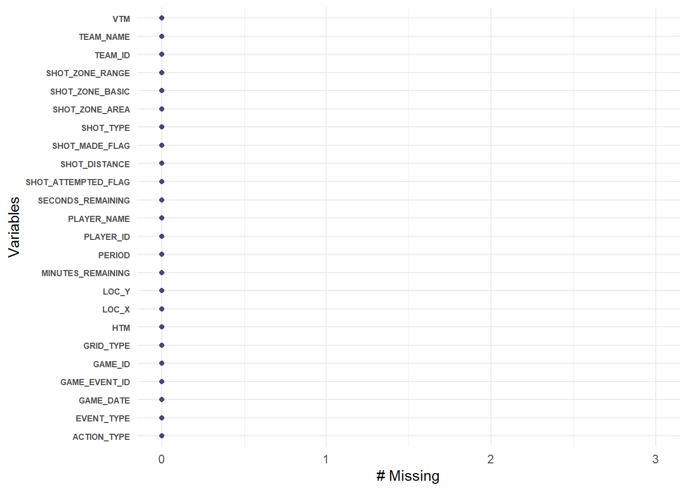
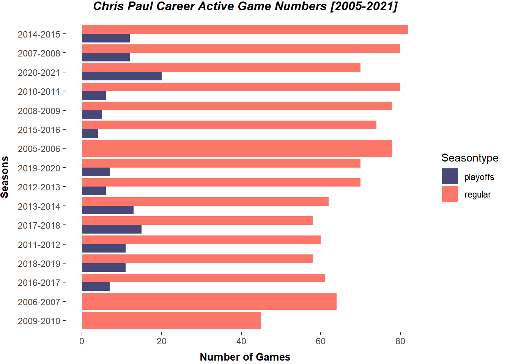
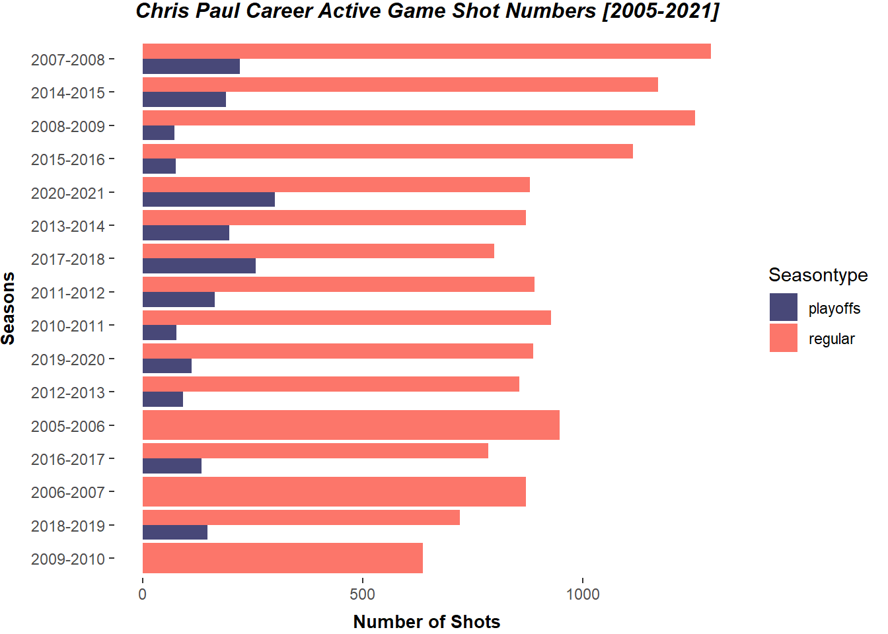

NBA is going to celebrate its 75th anniversary and as a big fan of NBA and Chris Paul, I would like to take this great opportunity to use data visualizations to show and reflect his evolution to “Point-God”. This website will apply his whole career game log and shot log, including both regular seasons and playoffs, to show how he impacted the game and his teammates.
1400 game log dataset that I collected from, Basketball Reference including the game results, fundamental stats (Points, Offensive Rebounds, Assists, Field Goal Attempts and so on) and advanced stats (Effective Field Goal Percentage, Assist Percentage and so on). Take the first ten columns as an example.
The dataset of shot log detail that is generated from NBA Stats Api. The dataset include shot detail information (shot zone area, range, and distance), and game information (game date, game remaining and so on). There are some data pre-processing tasks that can expect, such as join different season sub-dataset and drop the inactive game. Take the first six columns of 2020-21 playoffs as an example.
Fill the NA value 
Change data types, generate new data variable like result difference, and subset the active game dataset. As you can see below, he already played more than 1200 games during last 16 seasons.

Shot Log Dataset has no NA values

Add two new features: seasontype and season, which can help us connect the game log dataset and shot log dataset and gain some insightful ideas.

From above three graphs, big picture is that when he played more games, he would shot more, especially during the playoffs. For instance, 2020-2021 and 2017-2018, it was his first time to go to the NBA Final and Western Conference Final. However, some abnormal seasons also appears, such as: 2010-2011 regular season and 2005-2006 regular season.
My name is Deyuan Wang and I am a second year graduate student in Georgetown University Data Science and Analytics Program. In addition, I am a 12-years big fan of Chris Paul :). Welcome to click the Linkedin icon on the top to learn more about me.